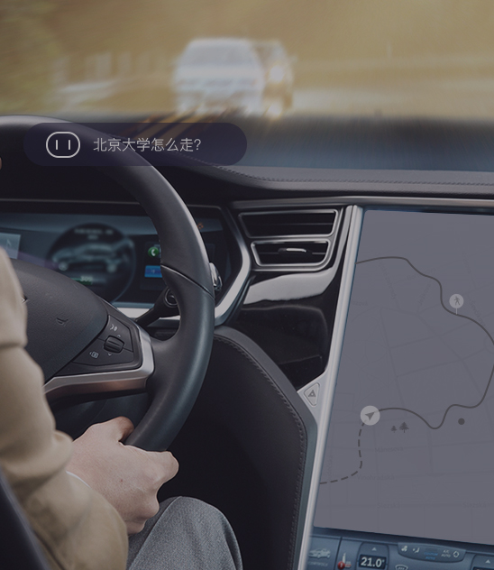
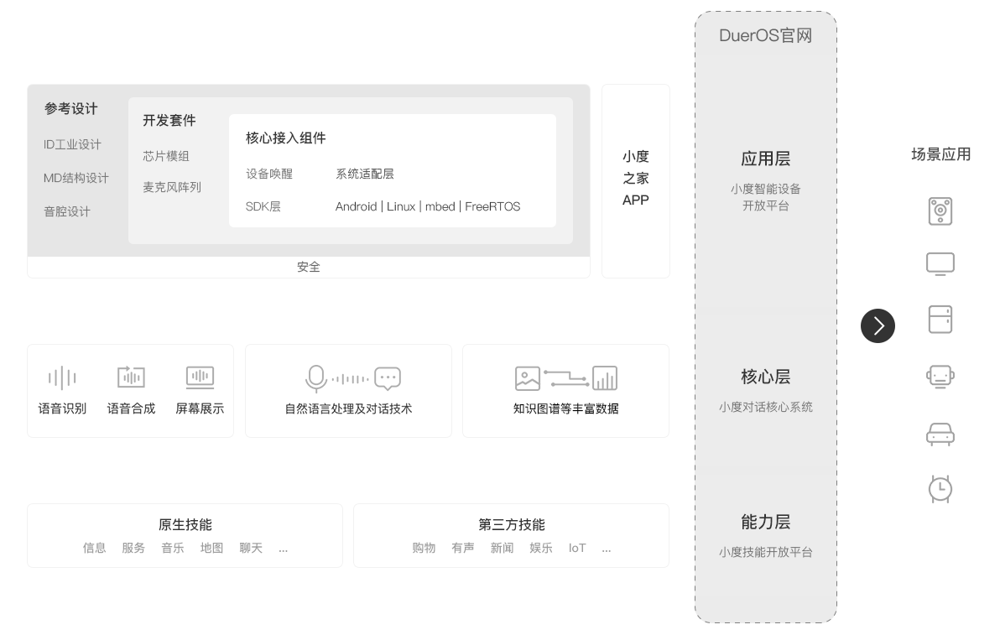
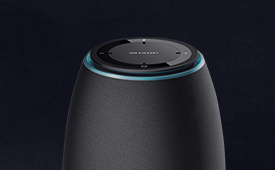
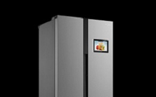
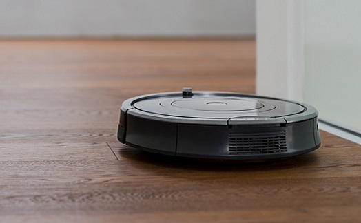
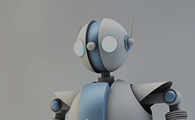
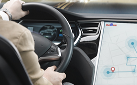

DuerOS是百度度秘事业部研发的对话式人工智能系统
是百度全球领先人工智能技术的重要应用之一，借助百度的信息与服务构成的巨大生态DuerOS拥有海量数据，能通过自然语言完成对硬件的操作与对话交流， 为用户提供完整的服务链条。作为一款开放式的操作系统， DuerOS通过云端大脑时刻进行自动学习让机器具备人类的语言能力。搭载DuerOS系统能力的“智慧芯片”，具备低成本、低功耗、高度集成等特点
广泛适用于智能玩具、蓝牙音箱、智能小家电等多种设备，极大降低了合作伙伴使用人工智能对话系统的门槛。DuerOS愿与各行各业的伙伴广泛合作，真正使人工智能的高科技落地到现实生活，为人类带来简单可得的便利
随着人工智能技术的发展，语音对话式的交互可以进一步降低用户获取信息的门槛，让更多人享受科技带来的红利DuerOS是百度度秘事业部研发的对话式人工智能系统
是百度全球领先人工智能技术的重要应用之一，借助百度的信息与服务构成的巨大生态DuerOS拥有海量数据，能通过自然语言完成对硬件的操作与对话交流， 为用户提供完整的服务链条。作为一款开放式的操作系统， DuerOS通过云端大脑时刻进行自动学习让机器具备人类的语言能力。搭载DuerOS系统能力的“智慧芯片”，具备低成本、低功耗、高度集成等特点
广泛适用于智能玩具、蓝牙音箱、智能小家电等多种设备，极大降低了合作伙伴使用人工智能对话系统的门槛。DuerOS愿与各行各业的伙伴广泛合作，真正使人工智能的高科技落地到现实生活，为人类带来简单可得的便利
随着人工智能技术的发展，语音对话式的交互可以进一步降低用户获取信息的门槛，让更多人享受科技带来的红利技术优势
百度做为最早布局人工智能的技术公司之一，汇聚了全球顶尖的人工智能人才。 在人工智能三大要素：算法、计算、数据上，都有着得天独厚的优势。 拥有建立在超大规模神经网络、万亿级参数、千亿级样本上的人工智能算法； 依托数十万服务器和中国最大GPU集群的计算能力； 作为全球最大的中文搜索引擎，累计了全网万亿网页、数十亿搜索、百亿级图像视频和定位数据； DuerOS对话式人工智能系统，建立在语音识别、图像识别、自然语言处理、用户画像等技世界领先的技术能力之上，是百度技术的集大成者。人工智能支撑的三大要素和四项功能
-
算法
拥有建立在超大规模神经网络、万亿级参数 千亿级样本上的人工智能算法 -
计算
数十万服务器 中国最大GPU集群的计算能力 -
数据
全网万亿网页、数十亿搜索 百亿级图像视频和定位数据 -
语音识别
语音识别准确率97%以上 -
图像识别
人脸识别准确率99.7% -
自然语言处理
能用自然语言与用户交流，理解用户意图 -

用户画像
拥有近10亿用户画像
智能设备解决方案
DuerOS智能设备解决方案是DuerOS为厂商全新打造的分层解决方案。能够满足各个类型厂商不同层次的需求。 分为：核心接入组件、开发套件、参考设计三层。具有低成本、方便灵活等特点。

适用场景
DuerOS可以广泛支持手机、电视、音箱、汽车、机器人等多种硬件设备，在不同场景的测评下，DuerOS识别率、响应速度、及流量节省方面，数据均领先与行业其他产品。通过 与DuerOS结合，可以让机器听懂人们日常交流的口语化表达内容，使设备具备与人类沟通和提供服务的能力，助力产业升级。-

智能音箱解决方案
适用于：智能音箱 -
智能电视解决方案
适用于：智能电视、智能投影仪、机顶盒、电视遥控器 -

智能冰箱解决方案
适用于：智能电视、智能投影仪、机顶盒、电视遥控器 -
智能故事机解决方案
适用于：智能故事机 -

小家电/轻量级解决方案
适用于：智能小家电、冰箱（轻量级系统）、空调、洗衣机、热水器、便携音箱、电饭煲、豆浆机、扫地机器人 -

家庭机器人解决方案
适用于：智能家庭机器人 -
轻量受控设备解决方案
适用于：插座、门锁、清毒柜、空气净化器、水净化、灯、窗帘、电风扇、水壶水杯、温控等设备 -
智能手机解决方案
适用于：手机语音助手、APP内语音助手等 -

车载解决方案
适用于：车载前装设备、一体化车机、智能后视镜等 -
可穿戴设备解决方案
适用于：智能手表、智能耳机、智能手环、其他可穿戴设备等
功能概览
DuerOS整合了百度的信息与服务生态优势，精心打造了10大类目100多项能力，用户可在不同场景下实现指令控制、信息查询、知识应用、寻址导航、日常聊天、智能提醒和多种O2O 生活服务；同时支持第三方开发者的能力接入。借助开放共赢的合作生态理念，DuerOS未来将更多合作伙伴的接入，将技术、场景和设备相结合，创造更多可能。-
音乐、电影、电视剧、综艺、短视频、有声书、电台等功能
娱乐影音 -
咨询、天气、股票、航班、体育（NBA）、问答、菜谱、图片等功能
信息查询 -
美食、电影、外卖、酒店、购物、打车、保洁、旅游、充值多种生活O2O服务
生活服务 -
地图、路线、路况、限行、违章、周边查询等功能
出行路况 -
翻译、时间、计算、汇率、单位换算等功能
实用工具 -
日程管理、闹钟、提醒、备忘、记事等功能
个人助手 -
百科、故事、儿歌、成语、育儿、诗词、文库等功能
知识教育 -
聊天、笑话、藏头诗、成语接龙、游戏等功能
聊天休闲 -
指令控制、状态查询、使用手册、客服电话等功能
智能家居 -
打电话、发短信、设置闹钟、通讯录查询、应用调起等功能
指令控制